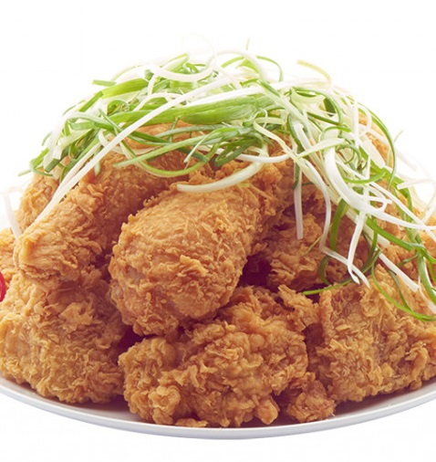
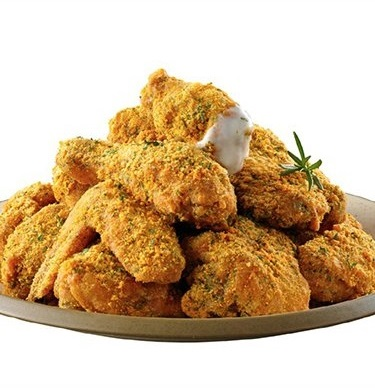
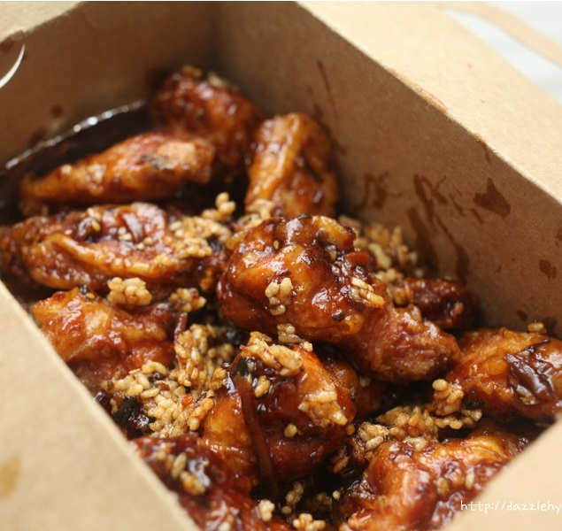

You may already try chicken at KFC, but chicken in Korea tastes very different
from the chicken you have eaten. In Korea, there are more than
50 brands related to chicken, and there are more than 200 menus related to chicken.



This is PaDak, a chicken mixed with soy sauce and green onions.
This is Bburinkle, chicken sprinkled with cheese powder.
This is GanjangChicken, chicken mixed with soy sauce